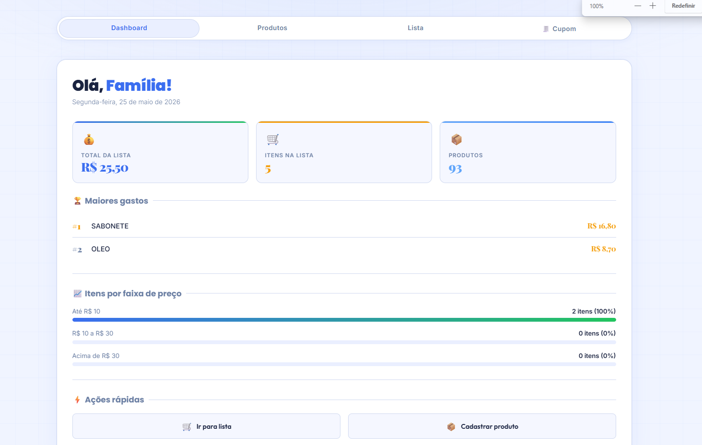
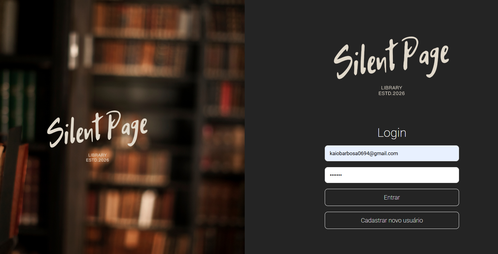

List PRO
Aplicação de gerenciamento de listas e tarefas, com interface limpa e funcionalidades de organização em tempo real.
Olá, sou
Olá! Me chamo Kaio Barbosa e sou apaixonado por tecnologia, desenvolvimento de sistemas e soluções criativas. Atualmente estudo e desenvolvo projetos utilizando tecnologias como HTML, CSS, JavaScript, PHP e banco de dados SQL, sempre buscando evoluir minhas habilidades e aprender novas ferramentas do mundo da programação.

Aplicação de gerenciamento de listas e tarefas, com interface limpa e funcionalidades de organização em tempo real.
Site de ecoturismo para Pindamonhangaba, apresentando trilhas, atrativos naturais e informações turísticas da região.

O Silent Page é um sistema web desenvolvido para o gerenciamento de livros, permitindo que usuários autenticados possam cadastrar, editar, visualizar e excluir livros de forma prática e organizada. O projeto foi construído utilizando PHP, JavaScript, HTML, CSS e MySQL, com foco em aprendizado de back-end, integração com banco de dados e criação de interfaces dinâmicas. Além disso, o sistema conta com login de usuários e atualização de informações sem a necessidade de recarregar a página, proporcionando uma experiência mais moderna e fluida.
Descrição do projeto aqui. Explique o objetivo, funcionalidades principais e impacto da solução desenvolvida.
Gosto de transformar ideias em projetos funcionais, com foco em organização, desempenho e experiência do usuário. Além do desenvolvimento web, tenho grande interesse por inovação, inteligência artificial e computação em geral. Estou constantemente aprendendo e criando novos projetos para aprimorar meus conhecimentos e crescer profissionalmente na área de tecnologia.